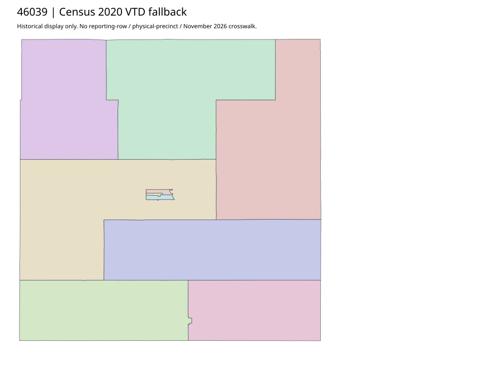

304 ordered indexDeuel | 46039
Outside accepted priority parents. Complete SOS authority record and historical Census2020 fallback retained; no deep current county map investigation or leaf/current join claimed.
0 priority / 10 full historical observations. Parent is a summary ancestor, not additive to leaves. No physical feature matches or current reporting crosswalk approved.
Acquired shared-parent assets
No complete county precinct-map original acquired from this bounded chain. Use qualified fallback; roster/landing/error bodies are retained as evidence.
Census2020 fallback
10 native historical VTD features. Entire785-feature ZIP original retained once, all66 counties. Yankton has one countywide VTD. No current/reporting allocation. complete original gzip

Full binary/attribute/geometry QA
Observed authority/acquisition routes
Complete SOS authority fields including original blank/masked values: parent inventory. No contacts were sent.
Ordered full children
- Precinct-03 | 318 source votes | remainder
- Precinct-09 | 314 source votes | remainder
- Precinct-08 | 304 source votes | remainder
- Precinct-11 | 218 source votes | remainder
- Precinct-05 | 217 source votes | remainder
- Precinct-07 | 212 source votes | remainder
- Precinct-10 | 193 source votes | remainder
- Precinct-06 | 182 source votes | remainder
- Precinct-04 | 171 source votes | remainder
- Precinct-01 | 169 source votes | remainder